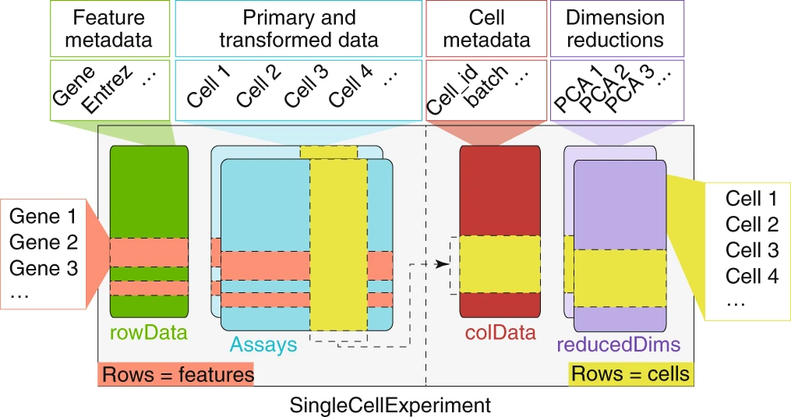
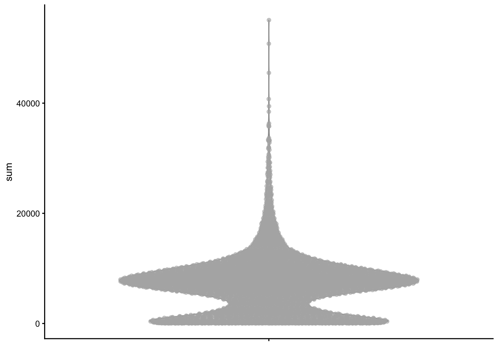
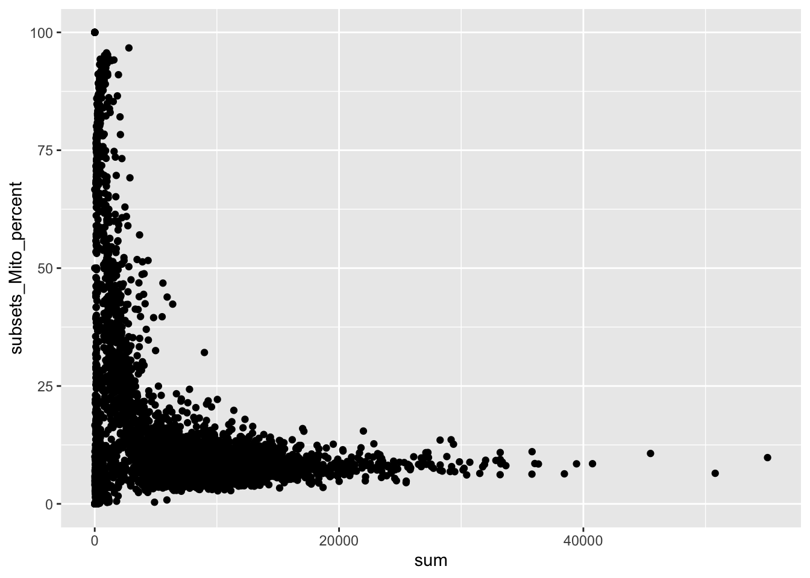
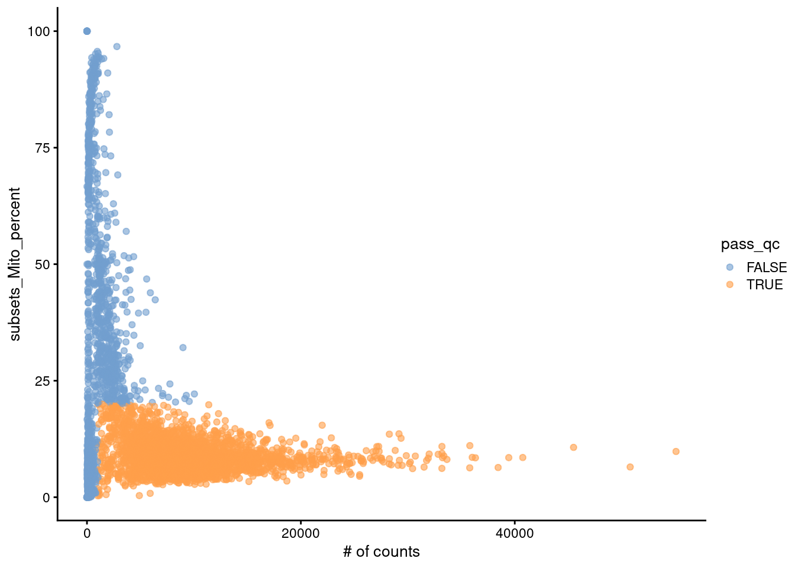

Today we will begin a two-course segment on single cell RNA-seq analysis. We will begin with an introduction to single cell RNA-seq data, followed by a discussion of key quality control metrics used to exclude low-quality cells from the data.
Analyzing single cell data in R
Droplet based scRNA-seq will produce libraries with 100,000 - 1,000,000 cell barcodes in each experiment, despite only 1-10,000 cells being loaded. Many of these barcodes are generated by non-cell containing empty droplets, which will end up with a few reads.
Storing a matrix of 20,000 genes x 1,000,000 cell barcodes would require a large amount of memory (20 billion values). However most of these values (> 95%) are zeros due to many empty barcodes with few UMIs and the low efficiency of single cell library generation (< 10-20% efficient). To limit unnecessary memory usage single cell data matrices are stored in a sparseMatrix format.
5 x 5 sparse Matrix of class "dtCMatrix", with 3 entries
i j x
1 4 1 2
2 2 2 1
3 5 4 1
Many of the functions that manipulate matrices (e.g. rowMeans, colSums, apply, [) can also be used on sparseMatrices, provided that you load the Matrix package (e.g library(Matrix)).
How can we extract the first 2 rows and first 3 columns of the sparse matrix sm that we generated above?
# print subset of smsm[1:2, 1:3]
How can we calculate the sum of the columns of sm?
To work with single cell data it will be helpful to know some base R concepts in such as subsetting with brackets [ and referencing and generating columns with $.
Vectors in R can be subset by vector index (position), a logical vector (c(TRUE, FALSE)), or name (if the vector is named).
Consider the following character vector letters.
letters
[1] "a" "b" "c" "d" "e" "f" "g" "h" "i" "j" "k" "l" "m" "n" "o" "p" "q" "r" "s"
[20] "t" "u" "v" "w" "x" "y" "z"
# extract 2nd, 4th, and 6th entryletters[c(2, 4, 6)]
[1] "b" "d" "f"
# subset by creating logical vectorvowels<-c("a", "e", "i", "o", "u")is_a_vowel<-letters%in%vowelsletters[is_a_vowel]
[1] "a" "e" "i" "o" "u"
# name the letters vector with uppercase LETTERSnames(letters)<-LETTERS# subset by nameletters[c("A", "Z")]
A Z
"a" "z"
Matrices are 2 dimensional vectors and have similar subsetting rules except there are two dimensions, rows and columns.
# columns can be generated or overwritten using $ with assignmentmtcars$new_column_name<-"Hello!"mtcars$wt<-mtcars$wt*1000# We can subset using logical vectors# E.g. filter for rows (cars) with mpg > 20mtcars[mtcars$mpg>20, ]
Our old-friend, the tximport package, has methods for importing the binary data from alevin. We need to supply a path to the quants_mat.gz file. Note that in contrast to importing data from salmon, tximport only allows 1 file to be loaded. If you want to load multiple samples use iteration approaches (e.g. lapply, purrr::map, a for loop). Also note that the eds package was installed which greatly speeds up the loading of the matrix.
We will load in data from a 10x Genomics scRNA-seq library generated from human periperhal blood mononuclear cells (PMBCS).
library(tximport)tx<-tximport(here("data/block-rna/scrna/pbmc/alevin/quants_mat.gz"), type ="alevin")
reading in alevin gene-level counts across cells with 'eds'
Here you can see that tx$counts is a sparse matrix that is genes (rows) by cells (columns).
How many barcodes are in tx$counts? How many genes?
# TODO Find number of barcodes and genes in tx$countsdim(mat)
What fraction of the matrix is non-zero? We can use the nnzerofunction from the Matrix package check
nnzero(mat)/length(mat)# (length = # of rows X # of columns)# similarilysum(mat>0)/length(mat)
The SingleCellExperiment class
Single cell analysis is centered around the SingleCellExperiment data structure, which serves as a single container to store the input data, various transformations (count data, normalized count data, PCA, UMAPs, etc.) and any results that are generated.

Creating a SingleCellExperiment object
A SingleCellExperiment object can be created from our sparse matrix using the SingleCellExperiment() function.
Accessing and storing cell and gene level metadata
As we perform analyses we will accumulate cell-level information, such as quality control metrics, clustering results, and celltype assignments. The SingleCellExperiment class stores this data within a data frame called colData, which we can access using colData(). This is a specialized Bioconductor specific data.frame class (DataFrame) which has similar semantics and functionality to a base R data.frame.
# empty right now.colData(sce)
DataFrame with 6075 rows and 0 columns
# add a sample annotationcolData(sce)$cell_source<-"PBMC"# equivalent approach using $sce$cell_source<-"PBMC"colData(sce)
The SingleCellExperiment also stores gene-level metadata in a data.frame called rowData(). We will use the rowData to store gene ids, symbols, and other information about genes.
# empty right nowrowData(sce)
DataFrame with 62266 rows and 0 columns
Manipulating and subsetting a SingleCellExperiment
To get familiar with SingleCellExperiment objects let’s calculate the total number of counts in each cell and store these counts in the `colData().
Next let’s calculate the total number of counts for each gene, summed across cells and the number of cells with > 0 counts per gene, and store both of these values in the rowData().
We can subset the SingleCellExperiment using the same syntax used to subset base R data.frames and matrices. Note that dplyr verbs do not work with SingleCellExperiment (see alternative tidySingleCellExperiment).
data.frame[rows, columns]sce[genes, cells]
# subset to data from first 4 genes and cellssce[1:4, 1:4]# subset to cells from PBMC cellssce[, sce$cell_source=="PBMC"]genes_to_keep<-c("ENSG00000223972", "ENSG00000210195", "ENSG00000210196")sce[genes_to_keep, ]cells_to_keep<-c("ACTATGGAGGTCCCTG", "GCTGCAGTCCGATCTC", "TCTCAGCTCGCCGAAC")sce[, cells_to_keep]
Many additional functions used on data.frames also work on SingleCellExperiment:
ncol(): # of cells nrow(): # of gene dims(): # of genes and cells rownames(): rownames in matrices (e.g. genes) colnames(): colnames in matrices (e.g. cells) cbind(): combine multiple SingleCellExperiments by column rbind(): combine multiple SingleCellExperiments by row
Storing gene identifier information
You’ll notice that our matrix has ensembl gene ids as the rownames (e.g. ENSG00000289576, ENSG00000221539). This is intentional as these identifiers are guaranteed to be unique and are a more stable and reliable identifier than gene symbols (e.g. ACTB, GAPDH). This becomes important if you want to compare to external datasets or ensure that your data can be easily used by others in the future.
These identifiers are useful but not as easy to interpret as gene symbols. Next we will retrieve gene symbols from an AnnotationHub() ensembldb resource and store the identifiers in the rowData().
We’d like to set the rownames of the object to symbols, but some of these are , NA or duplicated which will cause problems. uniquifyFeatureNames() is a convenience function that will rename gene symbols that are NA or duplicated values to the ensembl ID or a combination of gene symbol and ensembl ID.
Now that we have our data in a SingleCellExperiment we will perform some filtering and quality control to remove low expression genes and poor quality cells.
Our SingleCellExperiment has 62266 genes in the matrix. Most of these are not expressed. We want to exclude these genes as they won’t provide any useful data for the analysis.
# exclude genes expressed in fewer than 10 cells (~ 1% of cells)rowData(sce)$n_cells<-rowSums(counts(sce)>0)sce<-sce[rowData(sce)$n_cells>=10, ]sce
To exclude low-quality cells we will use the following metrics:
Number of counts per cell barcode
Number of genes detected per barcode
The percentage of counts from mitochondrial genes per barcode
A low number of counts, a low number of detected genes, and a high percentage of mitochondrial counts suggests that the cell had a broken membrane and the cytoplasmic mRNA leaked out. Conversely, an abnormally high number of counts and detected genes could indicate the presence of a doublet. See publication for more info (Classification of low quality cells from single-cell RNA-seq data)
To calculate these metrics we can use addPerCellQCMetrics from scater. Mitochondrial genes are named with a common “MT-” prefix (e.g. MT-CO2, MT-ATP6, MR-RNR2), which we can use to identify them.
# identify subset of genes that are from mitochondrial genomeis_mito<-startsWith(rowData(sce)$gene, "MT-")sce<-addPerCellQCMetrics(sce, subsets =list(Mito =is_mito))colData(sce)
We can use the plotColData() function from scater to plot various metrics (as a ggplot2 object).
plotColData(sce, y ="sum")

plotColData(sce, y ="detected")
plotColData(sce, y ="detected", x ="sum", colour_by ="subsets_Mito_percent")

plotColData(sce, y ="subsets_Mito_percent", x ="sum")+labs(x ="# of counts")

Also note that you can easily extract the colData() as a data.frame to use with ggplot2 for custom plots. To extract additional features, e.g. per cell gene expression, you can use makePerCellDF() or makePerFeatureDF() from scater.
Selecting an appropriate cutoff can be somewhat arbitrary, and there is a risk of excluding meaningful cell populations. I suggest starting with lenient cutoffs, then later increasing the stringency after examining the clustering and cell types.
Let’s define high quality cell as those with less than 20% counts from mitocondrial RNAs, greater than 500 genes detected, and greater than 1000 total counts. How many cells pass these criteria?
Labeling the qc failed cells in plots can be helpful.
sce$pass_qc<-sce$subsets_Mito_percent<20&sce$detected>500&sce$sum>1000plotColData(sce, y ="subsets_Mito_percent", x ="sum", colour_by ="pass_qc")+labs(x ="# of counts")
Lastly we can subset the SingleCellExperiment to exclude the low-quality cells.
It is often a good idea to save the SingleCellExperiment at periodic steps in the analysis. Use saveRDS() to store the object as a file, which can later be imported back into R using readRDS().
Normalization attempts to correct for technical biases that will distort biological signal in the data. A large source of variation arises due to differences in sequencing depth between cells. This can be seen by performing PCA on the unnormalized counts. We will use runPCA from scater to perform PCA.
# set seed for functions with a randomized component# to obtain the same result each executionset.seed(20231023)sce<-runPCA(sce, exprs_values ="counts", name ="count_PCA")
Note that PC1 is correlated with the total UMI counts (sum), meaning that the largest source of variation is related to differences in sequencing depth rather than biological differences between cells.
To normalize we will use 3 functions from the scran package. The normalization entails crude clustering to group related cells, identifying a cell-specific normalization factor (size factor), then scaling the counts by this factor and log transforming the data (with a pseudocount). The algorithm is described in detail in the following paper and in the R documentation (?scuttle::computePooledFactors)
Lun AT, Bach K, Marioni JC. Pooling across cells to normalize single-cell RNA sequencing data with many zero counts. Genome Biol. 2016 Apr 27;17:75. doi: 10.1186/s13059-016-0947-7. PMID: 27122128; PMCID: PMC4848819.
We can now see that PC1 does not correlate with total UMI counts and now shows some more distinct groups of cells, which will likely be different cell populations.